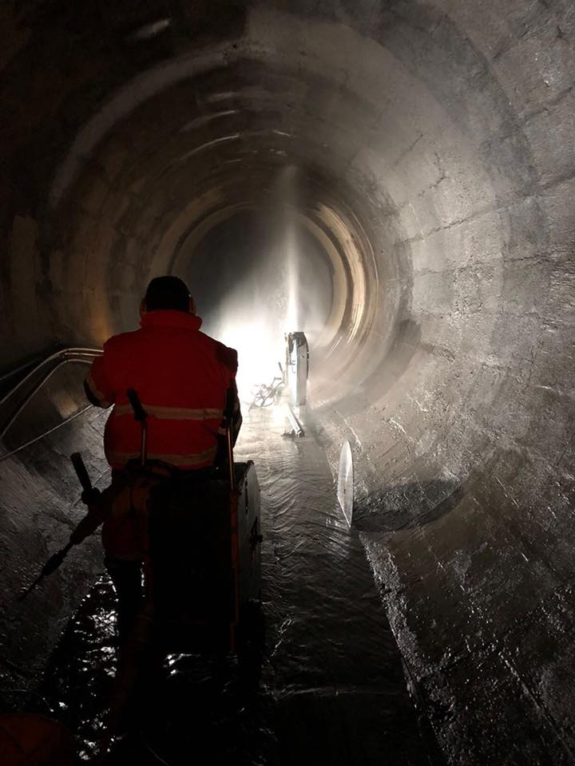
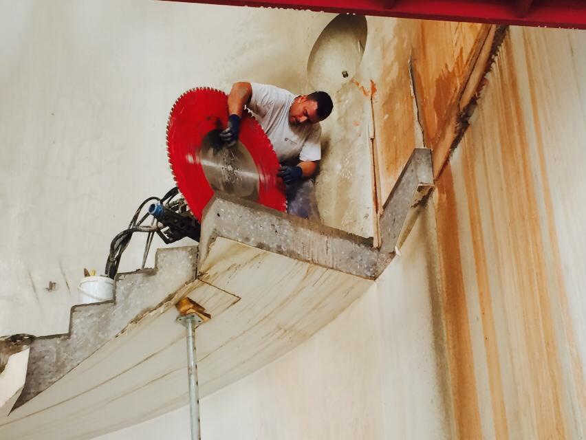
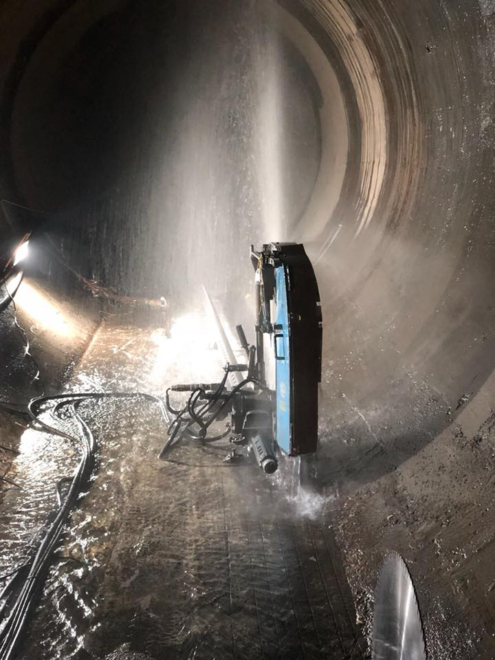
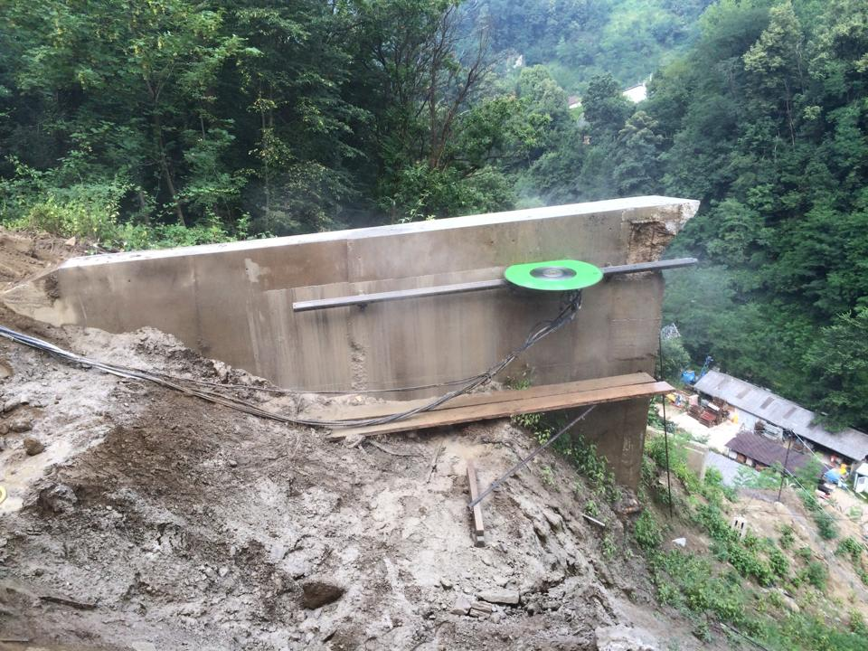
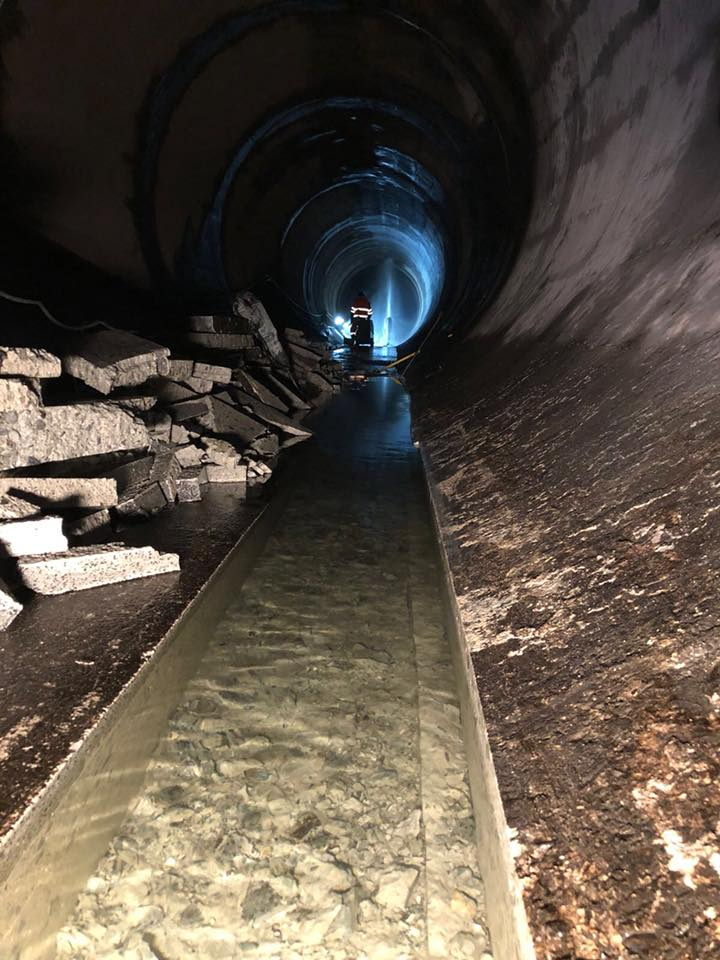
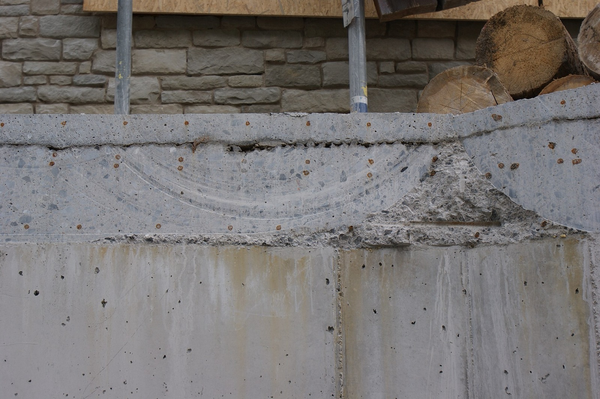

Losone · Ticino · dal 1998
Tagli e fori nel cemento armato.
Fresatura, perforazione e carotaggi in calcestruzzo, roccia e mattoni. Aperture con filo diamantato. Da Losone, in tutta la Svizzera.

28 anninel Registro di commercio dal 1998
4,8 su 54 recensioni su local.ch
Tutta la Svizzerasede a Losone, Via Trisnera 45b
Lu-Ve07:30-12:00 e 13:30-18:00
Lavori
Un solo mestiere, fatto bene.
Dal 1998 facciamo una cosa: tagliare e forare materiali duri. Calcestruzzo, cemento armato, roccia, mattoni e asfalto.

- 01
Fresatura e perforazione
Fori e tracce in calcestruzzo e roccia, dove serve e della misura che serve.
- 02
Taglio del cemento armato
Tagli e perforazioni in pareti, solette e scale in cemento armato, anche con le armature dentro.
- 03
Aperture con filo diamantato
Per aperture grandi e sezioni spesse: il filo passa nei fori d'angolo e taglia tutto il blocco.
- 04
Carotaggi e prelievo provini
Carote dal calcestruzzo per le prove sul materiale, e fori di diversi diametri per la ventilazione.
- 05
Asfalto e demolizioni con pinza
Taglio dell'asfalto e demolizioni controllate con la pinza.
- 06
Pareti in mattoni
Fori e aperture anche nelle pareti in muratura di mattoni.
Come si apre un muro
Quattro fori, un filo, un'apertura pulita.
- 01TracciamentoIl rettangolo dell'apertura segnato sul muro.
- 02CarotaggioUn foro in ogni angolo. La prima carota è anche un provino.
- 03Filo diamantatoIl filo passa nei fori e gira, raffreddato ad acqua.
- 04EstrazioneIl blocco tagliato esce intero.
- 05AperturaBordi lisci, armature tagliate a filo.
Schema di esempio, non in scala.
Cantieri
Dove c'è da tagliare.
Gallerie, scale, solette in pendio. Foto dei nostri lavori.




La ditta
Gabriele Sasselli e la sua squadra, dal 1998.
Techno Taglio Sagl è iscritta al Registro di commercio dal 1998 e ha sede a Losone. La guida da allora Gabriele Sasselli, socio e gerente.
Lavoriamo in Ticino e, quando serve, nel resto della Svizzera. Le foto in questa pagina vengono dai nostri cantieri, anche in galleria.
Sono molto rapidi nello svolgimento dei lavori, molto puliti, sanno quello che fanno e sono super organizzati e attrezzati.
Una recensione su local.ch, 2022
Contatto
Un foro, un'apertura, un provino?
Diteci materiale, spessore e misure, anche approssimative. Vi richiamiamo con un preventivo o per un sopralluogo.